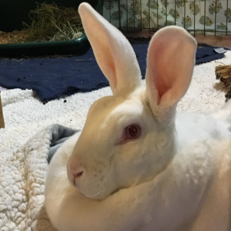

Ruby
Breed: Standard Rex
Sex: Female
Age: 8 Years, 6 Months
Weight: 8 Pounds
Bio
Hello! My name is Ruby. I love feeling safe and having room to stretch my legs. I also love food and will prove it
by dancing for you!
I have arthritis and get meloxicam every day which I lap up like it’s candy. Because
of my arthritis I need special litterbox accommodations, the area immediately surrounding my litterbox can be a
little messy. The rest of my enclosure is very tidy though!
I get along with my foster family and lounge
next to my rabbit buddy in an enclosure next to mine. Because I wasn’t treated very well prior to rescue I have
some trust issues and strangers make me a bit anxious.
I would rather not be picked up. I need someone
patient who will cherish me as I am and remind me that I am very special. It won’t be long before I will lay my
velvety head on your foot and wait for you to pet me.
Want to Support Me?
To support me, or any of the sanctuary rabbits at the IHRS, please Donate to our GoFundMe if you are able.